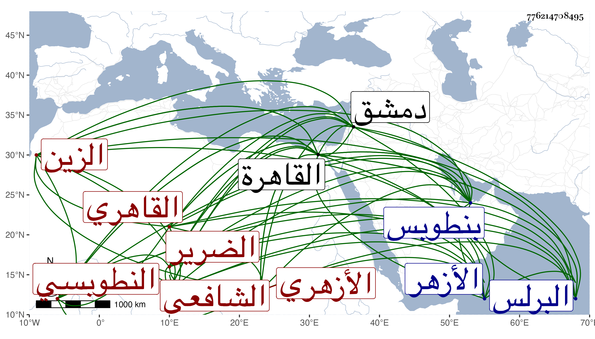

0902Sakhawi.DawLamic.ITO20230111-ara1.EIS1600.776214708495
Biography ID: 776214708495
626
عبد الغفار بن أبي بكر بن محمد بن عبد الله الزين النطوبسي ثم القاهري الأزهري الشافعي الضرير ويعرف في بلده بابن بيته بموحدة مفتوحة ثم تحتانية ساكنة ثم فوقانية مفتوحة بعدها هاء سكت . ولد بنطوبس سنة ستين تقريبا وقرأ القرآن وتحول أولا إلى البرلس فأخذ فيها عن الشهاب بن الاقيطع يسيرا ثم قدم القاهرة فقطن الأزهر وحفظ كتبا في فنون وهي الشاطبية والرائية وألفية الحديث والنحو والمنهاج وجمع الجوامع والتلخيص والخزرجية والمقنع في الجبر والمقابلة وأخذ عن السراج العبادي آخر سنيه والشمس البامي ولازم الجوجري في عدة تقاسيم وأخذ عن الكمال بن أبي شريف غالب شرح ابن المصنف وقطعة مما كتبه على شرح المحلى لجمع الجوامع مع الأصل وشيئا من تفسير البيضاوي ودروسا من شرحه للارشاد وغير ذلك كالكثير من متن ألفية العراقي وسمع عليه السنن لابن ماجه وكذا أخذ عن زكريا جملة من متن جمع الجوامع ومن أوائل شرح ابن المصنف والشرف عبد الحق السنباطي حضر عنده عدة تقاسيم وألفية النحو والحديث ومن شرح جمع الجوامع للمحلى ولازمه حتى تلا عليه للسبع جمعا وحضر دروسا عند العلاء الحصني والبدر بن خطيب الفخرية والبدر المارداني ولازمه في الفقه والفرائض والحساب والجبر والمقابلة ومما حمله عند ترتيبه للمجموع وشرحه للفصول وللمقنع ومن غير تصانيفه اللمع والوسيلة كلاهما لابن الهائم وأخذ الوسيلة بكمالها عن الزين عبد القادر بن شعبان وشيئا منها عن الشهاب السجيني الأزهري وعن البدر بن الغرس دروسا من المختصر ومن شرح العقائد وكان يقرر في أثناء ذلك حاشيته عليه وتردد إلي في ألفية الحديث وغيرها كالبخاري وسمع معظمه والكثير من الموطأ وأبي داود والترغيب والاذكار وكذا سمع على الديمي في مسلم وغيره وعلى السنباطي صحيح مسلم وقطعة من أول الترمذي وأبي السعود الغراقي في النسائي الكبير ومسلم والشاوي في الصحيحين بحضرة الخيضري وربما حضر المشهدي . وسمع على سبط شيخنا في البردة وغيرها وتميز بل برع وشارك ثم لما قدم التقي بن قاضي عجلون لازمه واغتبط بفقهه وسافر معه إلى دمشق فقطنها مديما للاشتغال وسمع هناك على الشهاب بن الصلف والنور الخليلي وابن عراق والبرهان الناجي في البخاري وعلى الفخر عثمان التليلي في النسائي الصغير ، وحج منها في سنة ست وتسعين صحبة السيد الكمال بن حمزة فلازمه في المقروء عليه من الارشاد وكذا لازم مجلس القاضي في الفقه وفي النسائي وغير ذلك وحمل عني الألفية بكمالها وأشياء من جملتها غالب مناقب الشافعي وبلوغ المرام كلاهما لشيخنا وسيرتي ابن هشام وابن سيد الناس ومن لفظي جملة لأماكن من تصانيفي ولحديث زهير العشاري وكان يطالع له شرحي للالفية ويراجعني فيما لعله يقف عليه منه وكتبت له إجازة حافلة في كراسة وأقرأ الطلبة من الغرباء وغيرهم وعدى على خلوته في دريهمات كانت معه وكاد أن يصل إليها ورجع مفارقا للسيد المشار إليه في موسم سنة سبع إلى القاهرة وبلغني أنه تزوج هناك وجاءني سلامه أعانه الله تعالى .
